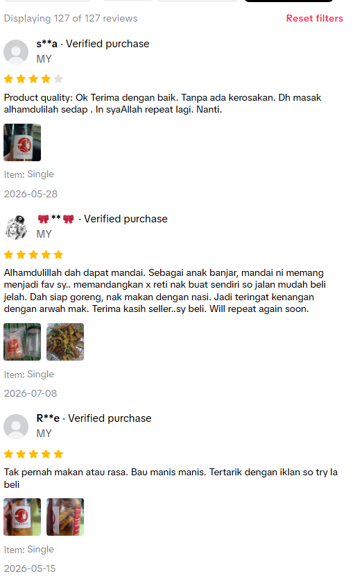
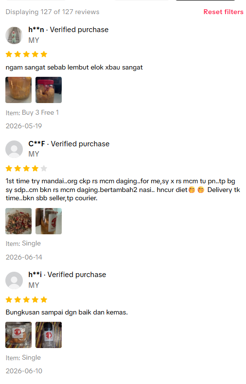
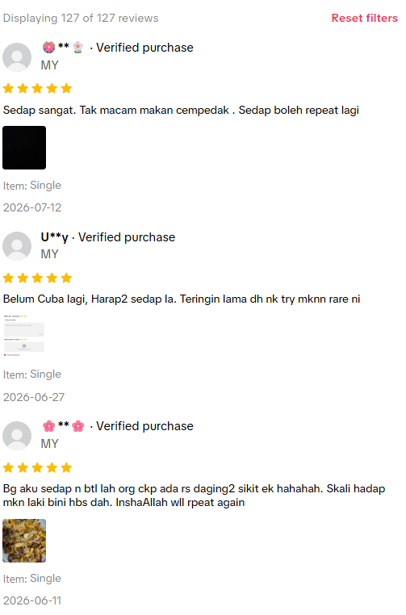
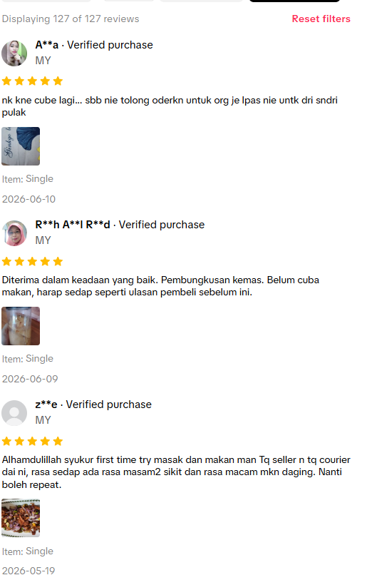
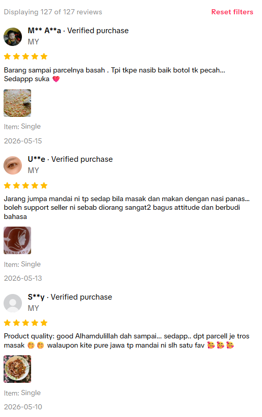
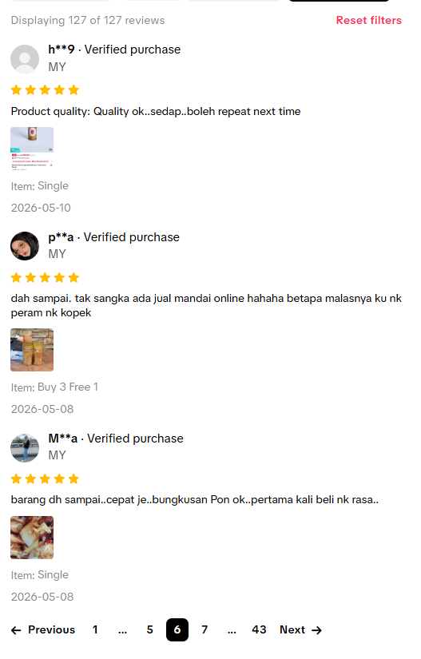
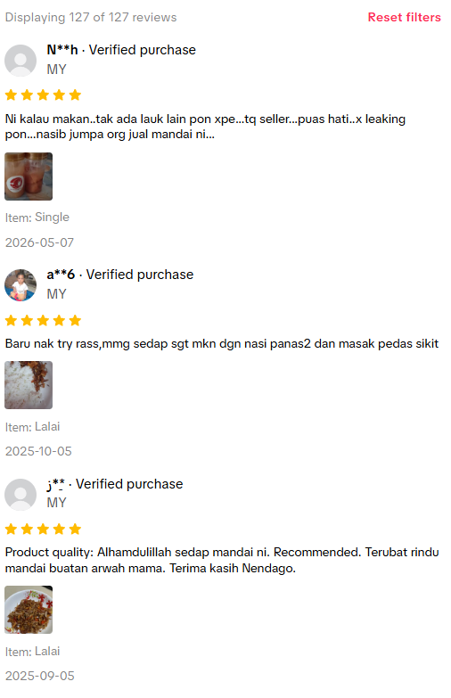
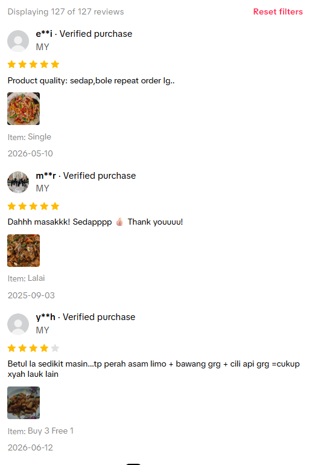

Rasa Yang Hilang Ditemui Kembali: Mandai Kulit Cempedak!
Dari Buah Cempedak Biasa, Terlahirlah Khazanah Kulinari Warisan Banjar yang Menggoda Selera.
Nikmati Keasliannya!
Dari Buah Cempedak Biasa, Terlahirlah Khazanah Kulinari Warisan Banjar yang Menggoda Selera.
Nikmati Keasliannya!

Pernahkah anda mendengar tentang keajaiban kulinari yang lahir dari kebijaksanaan nenek moyang kita? Kami perkenalkan Mandai Kulit Cempedak – sebuah hidangan tradisional istimewa dari masyarakat Banjar, yang berasal dari Kalimantan, Indonesia, dan turut popular di Malaysia.
Bukan sekadar lauk pauk, Mandai adalah cerita tentang bagaimana kreativiti dapat mengubah sesuatu yang sering dibuang – kulit cempedak yang tebal dan putih – menjadi khazanah rasa yang tiada bandingnya. Melalui proses pengawetan unik dengan air dan garam selama beberapa hari, kulit cempedak ini difermentasi, menghasilkan rasa dan tekstur yang luar biasa. Ia adalah semangat 'tiada sisa' yang diamalkan sejak dahulu kala, dihidupkan semula untuk anda!
Mandai bukan hidangan biasa yang mudah dijumpai, ia adalah permata tersembunyi yang kini boleh anda nikmati. Rasai keajaiban transformasi 'dari buah kepada hidangan istimewa' di setiap suapan!
Bersiaplah untuk pengalaman rasa yang tiada duanya! Mandai Kulit Cempedak menawarkan profil rasa yang sangat unik dan kompleks. Ia adalah gabungan sempurna antara rasa savuri yang mendalam, sentuhan masam yang menyegarkan, dan sedikit kemanisan semula jadi dari buah cempedak itu sendiri. Setiap gigitan adalah ledakan cita rasa yang memukau deria anda.
Dan teksturnya? Ia benar-benar luar biasa! Mandai sering dibandingkan dengan daging berserat seperti isi ayam yang dicarik. Kekal elok bila dimasak, ia menawarkan 'gigitan' yang memuaskan dan tidak mudah hancur. Bayangkan gabungan rasa dan tekstur ini dalam hidangan kegemaran anda – pasti akan membuat anda teruja!

Mandai bukan sekadar hidangan sampingan; ia adalah bintang yang boleh bersinar dalam pelbagai resipi!
Cara paling popular! Tumis Mandai bersama cili, bawang, bawang putih, dan ikan bilis untuk lauk yang membangkitkan selera dan sesuai dimakan dengan nasi panas. Rasa masam manis pedasnya pasti membuatkan anda ketagih!
Inginkan snek yang unik? Goreng Mandai sehingga rangup keemasan. Teksturnya yang renyah dan rasanya yang unik menjadikannya snek yang sempurna untuk dinikmati bila-bila masa.
Tambahkan Mandai ke dalam masakan gulai, sup, atau sebagai inti karipap untuk kelainan rasa. Kreativiti anda adalah batasnya! Ia akan menambah kedalaman rasa yang unik pada setiap hidangan.
Bagi mereka yang membesar dengan masakan Banjar, Mandai adalah rasa pulang ke kampung halaman, mengimbau kenangan manis dan tradisi yang tidak lapuk dek zaman.
@nendagohq Cara masak mandai kulit cempedak 🤤
♬ original sound - NENDA GOHQ
Jadi, apa tunggu lagi? Bawa Mandai Kulit Cempedak ke dapur anda dan biarkan ia menyemarakkan selera!










"Rasa Mandai ni betul-betul macam arwah nenek saya buat! Terbaik, menggamit memori lama. Kualiti pun terjamin!"
- Puan Salmah, Peminat Tradisi
"Tak sangka kulit cempedak boleh jadi seunik dan sesedap ni! Memang lain dari yang lain, wajib cuba bagi pencari rasa baru!"
- Encik Johan, Penggemar Eksperimen Kuliner
"Mudah sangat nak masak, terus jadi lauk favorite keluarga. Anak-anak pun suka! Senang kerja di dapur, dan puas hati dapat hidangkan makanan warisan."
- Cik Amy, Suri Rumah Moden

- Maklum Balas Pelanggan

- Komen Pelanggan
Klik butang di bawah untuk mendapatkan Mandai Kulit Cempedak asli anda di kedai pilihan. Sokong warisan, nikmati kelazatan!